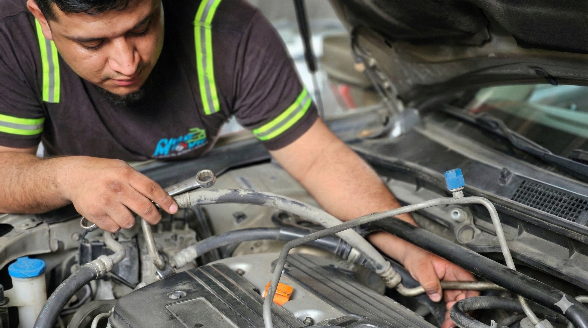

Diagnóstico primero
Nunca cambiamos piezas a ciegas. Toda reparación empieza con lectura de presiones y un reporte claro, para que sepás exactamente qué tiene tu vehículo antes de autorizar.
Establecidos desde 1998 • San Pedro Sula
La historia de un taller que se convirtió en el referente de climatización automotriz del norte de Honduras.
Aire Móvil del Norte nació en 1998 en el Barrio Las Flores de San Pedro Sula, fundado por Gina Medina con una convicción simple: en una de las ciudades más calurosas de Centroamérica, el aire acondicionado del vehículo no es un lujo, es una necesidad.
Desde entonces, más de dos décadas de trabajo especializado nos han convertido en el taller de referencia en climatización automotriz del norte de Honduras. La especialización es nuestra ventaja: el A/C automotriz es el corazón del negocio, y esa concentración es lo que nos permite diagnosticar con precisión y reparar con garantía real.
Con los años, la confianza de nuestros clientes nos llevó a abrir una segunda unidad de negocio: la importación de vehículos bajo pedido desde Estados Unidos, con transparencia total en el proceso aduanero y mecánico — y, por supuesto, con el A/C verificado por nuestro propio taller antes de la entrega.
Trabajamos con todas las marcas y todos los sistemas — desde el clásico R134a hasta el moderno R1234yf — con equipos de diagnóstico especializados y un compromiso que no ha cambiado desde el primer día: decirte la verdad sobre lo que tiene tu vehículo y cobrarte solo por lo que realmente necesita.

1998
Año de fundación
Nunca cambiamos piezas a ciegas. Toda reparación empieza con lectura de presiones y un reporte claro, para que sepás exactamente qué tiene tu vehículo antes de autorizar.
Cada reparación mayor sale con garantía por escrito. Si algo no queda bien, volvés y lo resolvemos — así ha sido durante 28 años y así seguirá siendo.
El aire acondicionado automotriz es el corazón de nuestro taller desde 1998. Esa especialización se traduce en diagnósticos más rápidos, reparaciones más precisas y menos regresos al taller.

Ganadores
Innovation
Challenge
En 2026, Fundación Terra Honduras distinguió a Aire Móvil del Norte en su Innovation Challenge, un galardón que reconoce a las empresas con mayor impacto, innovación y visión de crecimiento en el norte del país.
Para nosotros, este premio no es un punto de llegada sino la confirmación de un camino: seguir profesionalizando el servicio automotriz hondureño, un vehículo a la vez.
28+
Años de experiencia
1998
Fundación
★ 5.0
Rating Google
Bo. Las Flores, Ave. Juan Pablo II, San Pedro Sula. L-V 7:30 AM - 5:30 PM | Sábados 7:30 AM - 1:00 PM.